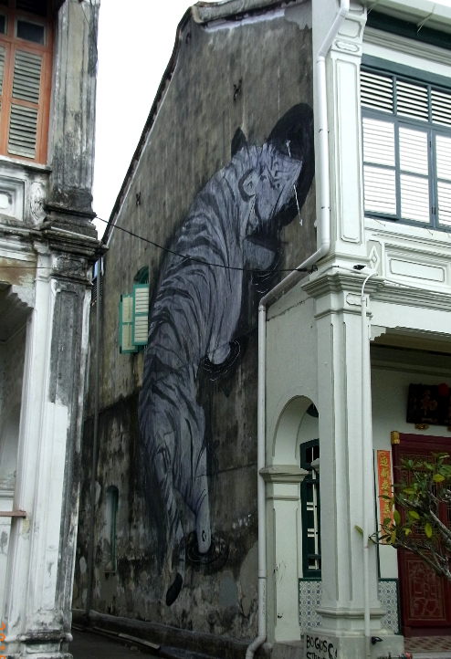
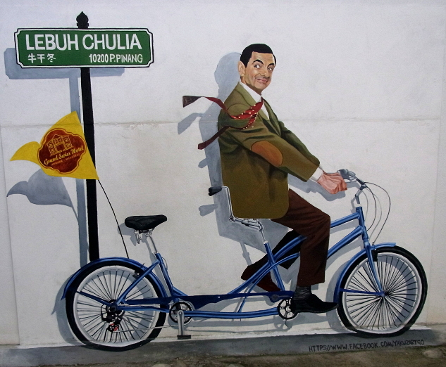
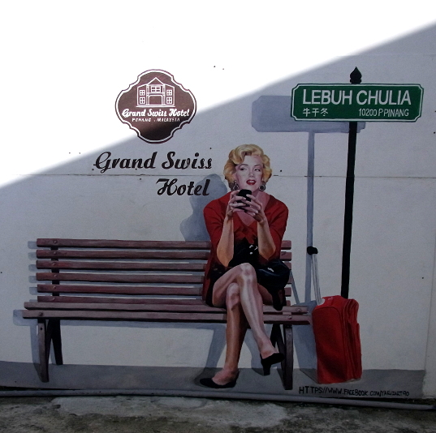
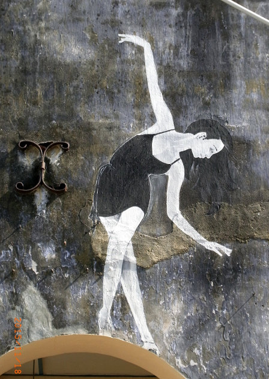
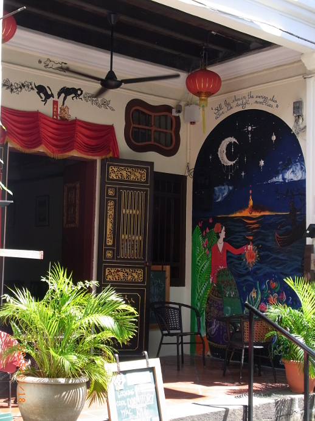
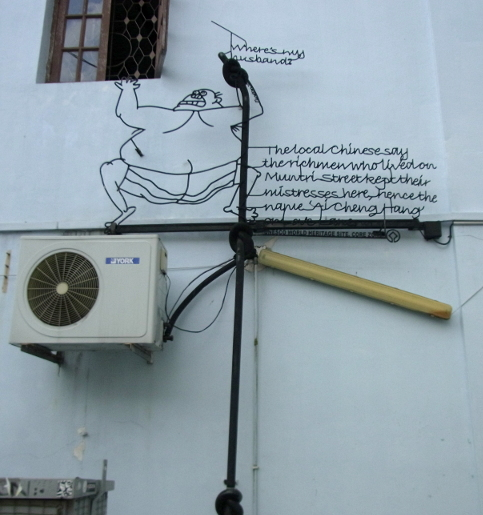
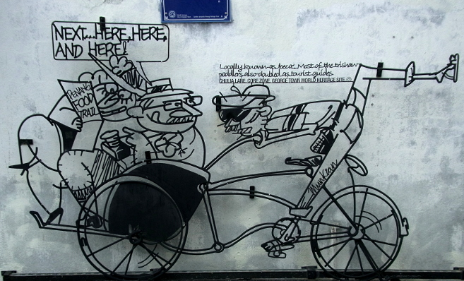
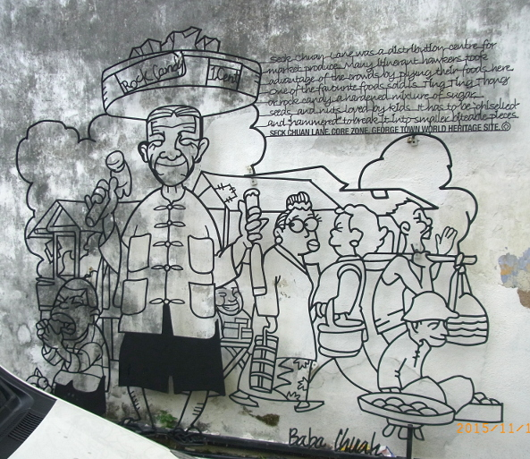

Malaysia Trav-E-Log ©
More Street Art
17-19 Nov 2015, George Town, Penang, Malaysia
-------------------------------------------
The preceeding page showed art in the form of iron or glass on concrete. Here we add the art of painting murals.
-------------------------------------------

Larger than life. Sumatran tigers probably roamed this very area. |
| "Hey, watch where you're going!" |
 |
 |
"Waiting patiently for you." |
| This balerina is perched above an archway. |
 |
 |
Think I'll stay here next time |
 |
"Where's my husband?"
"The local Chinese say the richmen who lived on Muntri street kept their mistresses here, hence the name 'Ai' Cheng Hang on and on.
UNESCO WORLD HERITAGE SITE, CORE ZONE©" |

"Locally known as beca', Most of the trishaw peddlers also doubled as tourist guides.
CHULA STREET, CORE ZONE, GEORGE TOWN WORLD HERITAGE SITE.©" |

Seck Chuan Lane was a distribution centre for market produce. Many itinerant hawkers took advantage of the crowds by plying their foods here. One of the favourite foods sold is ting ting thong or rock candy, a hardened mixture of sugar, seeds, and nuts loved by kids. It has to be "chiselied" and "hammered" to break it into smaller biteable pieces.
SECK CHUAN LANE, CORE ZONE, GEORGE TOWN WORLD HERITAGE SITE.©" |